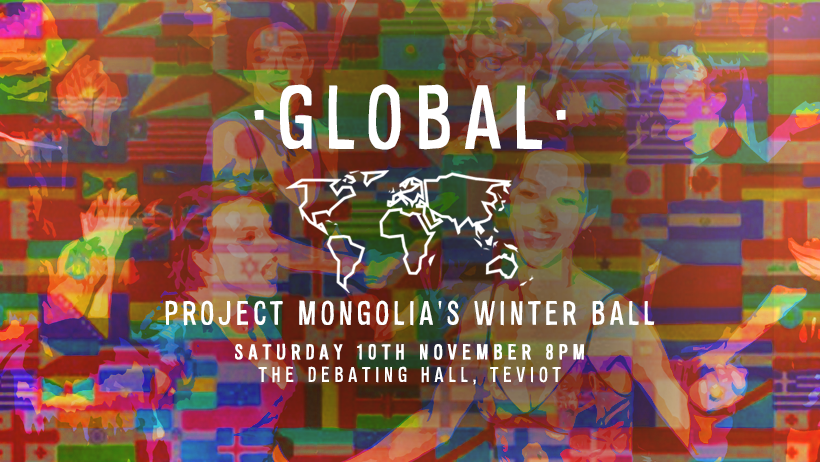
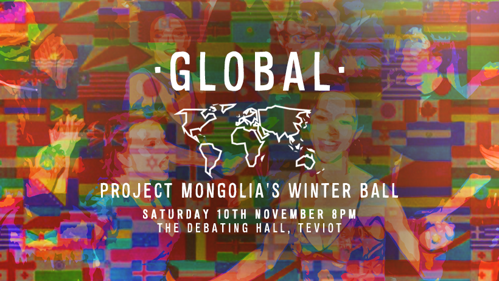

PORTFOLIO
GNT
GNT is an integrated project which aims is to educate users on all aspects of gin. This is done through interactivity on the website and a visually stimulating Motion Graphic. A forum is also included where users who sign up to GNT can interact, ask questions and share knowledge together.
SAVE THE SEA
Save The Sea is a fun, yet educational game targeted at 6-11 year olds. The aim of the game is to collect the rubbish from the sea and avoid hitting the fish. The desire for users to set high scores exposes them to a greater variety of facts on marine conservation.
YMCA - DON'T LOOK THE OTHER WAY
To support the YMCA in raising awareness of their vital charity for the homeless a 360 video was created.The video is to show the public what happens when you look the other way. Supporting pieces such as emailers, posters and a case study video were also created.
YMCA - DON'T LOOK THE OTHER WAY
360 VIDEO
During my university placement year at Southpaw, West Kent YMCA launched a campaign called ‘Don’t Look The Other Way’. Southpaw set out to create a 360 degree video that would highlight how the general public would look away when encountering homeless people on the street. Not only this, but the video wanted to emphasize being ignored had a damaging effect.
I played a big role in this project. I was then given the responsibility of setting up and using the Samsung 360 camera, edit 360-film and also add both animations and text. I had to ensure that what we wanted to create was achievable with our technology and that ideas put forward for the video were brought to life to the best of our best ability. Furthermore, when we were shooting, I was in charge of the setup of equipment and calculating the distances needed when shooting. I had to made sure all equipment was charged and memory cards were empty. I also directed Becky, a homeless person who allowed us to recreate her life story in parts of our video, during the shoot.
The final feature resulted in two 180-degree videos sewn together in After Effects with added features whilst also including factual text throughout. On one half of the video viewers would experience the ‘dark’ side in which Becky is left neglected, and the other half a ‘brighter’ side where viewers didn’t turn a blind eye but instead supported her, which shows Becky in her boutique shop.
Simply click and drag the screen if you're on desktop or use the 360-degree functionality if you're on mobile. It's even better if you have a VR headset or Google Cardboard. Best viewed in Chrome or via the YouTube App:
CASE STUDY
The film was released on Facebook, YouTube, Instagram and Twitter, with paid media to boost the posts. Uniquely designed Google Cardboards were distributed to members of the public for donations in Tunbridge Wells shopping centre. A stand was set up where they could experience the film using an Oculus Rift. Footage was gathered from the fundraising day which was then used to create the case study video. Seeing the reactions of the public was incredible and I was happy to see how our work had impacted people.
POSTER
Prior to the video shoot, I was informed that also would have to do the photography as the company’s photographer was unavailable for the entire session. The photos were needed to create posters and advertisements for the 360-degree video. The photographer taught me about which aperture, shutter speed and ISO I needed for dark and light photos. He also helped show me how to work with the lights on set, which I would use for the images. He also explained the importance of shooting in RAW. Having the camera on this setting meant that nothing would be compressed in the camera so no quality would be lost. This meant when editors set out to retouch photos, they have the best quality image. This last-minute decision was a surprise but I knew I could step up to the challenge.

EMAILER
Finally, I created an internal emailer. This involved testing my code on many various browsers and emails to ensure that it was always compatible.

GALLO
Gallo Family Vineyards produce a vast array of different wines. Throughout my placement year I worked with them a lot and produced many videos and motion graphics for their social media.
JOHNNIE WALKER
Johnnie walker attended the British Grand Prix in Silverstone. They delivered an unforgettable experience at the johnnie walker highball bar with live music and cocktail masterclasses’. Video content and emailers were created to promote the iconic Johnnie Walker Highball drinks.
JOHNNIE WALKER HIGHBALL
The British Grand Prix was held in Silverstone where Johnnie Walker provided their iconic Johnnie Walker Highball cocktails. The brief was to create a fast-paced, clean cut short film of the event which could be used on their social media. They wanted to include shots of the bar, the Johnnie Walker figurine and people socialising and drinking. Ensuring that a lot of information was used, capturing the event within a small amount of time was a difficult task but I feel the balance was found perfectly. The same brief was then given but for the German Grand Prix.
JOHNNIE WALKER EMAILERS
Also I created emailers which included content all about the events.
JOHNNIE WALKER HIGHBALL CINEMAGRAPHS
More content focusing on the Johnnie Walker Highball cocktails were produced. These included seamless cinemagraphs to post on the official Johnnie Walker Instagram.
MILLER
A series of miller cinemagraphs were created for their social media outlets. These were designed by recycling old content and revamping them. Highlighting the importance being creative and innovative.
MILLER CINEMAGRAPHS
Miller wanted to repurpose some content so that it could be used on their social media again. I therefore was given the task of taking an image and turning it into a moving cinemagraph. This would add life and create a seamless looping video which can be used across their media platforms.To do this I manipulated the images given to me on Photoshop. I cut out different sections of the image and saved out multiple different layers which I could then manipulate on After Effects to create looping movement.The different movement I added included, drips, steam, opeing a bottle cap, light flares and opening a bottle. Although this is a relatively simple idea it was very affective and created some great content. In After Effecrts I utilised a plugin called Trapcode Particular to create my desired look.
ROE & CO
This is an area where I have a keen interest and I would love to develop my skills further. I have created responsive websites and these have expanded my knowledge, using Jquerys, Javascript and Bootstrap.
ROE & CO
Roe & Co wanted to revamp some footage to be released on St Paddys day. The brief was to make it stylish and sleek and come to 30 seconds in length. They wanted the storyline to still flow and make sense. I chose to make the editing flow with the music chosen and shape the piece around this aspect. I was very pleased with the outcome and felt that it reflected Roe & Co’s style.
PROJECT MONGOLIA
Project Mongolia are a society at the University of Edinburgh with the aim of supporting charities working in Mongolia with disadvantaged children through cultural exchange volunteer projects. A poster to advertise their winter ball was created, along with a facebook banner for social media.
PROJECT MONGOLIA
Project Mongolia requested a vibrant poster for a fundraising ball with an international theme It was suggested to include images of flags, and images of the previous years ball. In addition, I created a Facebook banner which had the same style as the poster. I ensured it was the optimal size for desktop and mobile, therefore allowing it to be legible on all devices.
 

SOME LIKE IT HOTTER
Some Like It Hotter are an all female jazz band from East Sussex. A Christmas poster was designed to encourage the public to attend there Christmas extravaganza.
SOME LIKE IT HOTTER
Some Like It Hotter needed an a4 poster to catch the attention of the public in East Sussex to join them at their Christmas extravaganza, The poster created needed to be eye-catching and fun, yet classy and sophisticated. The iconic figure for the band had to be included and so did the name of the band ‘Some Like It Hotter’.